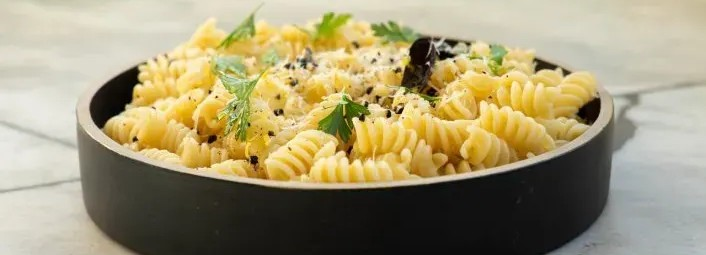
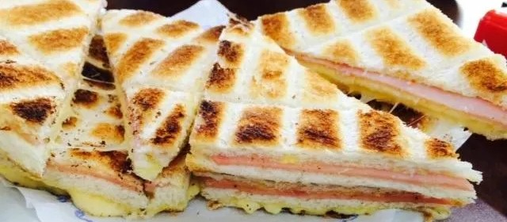
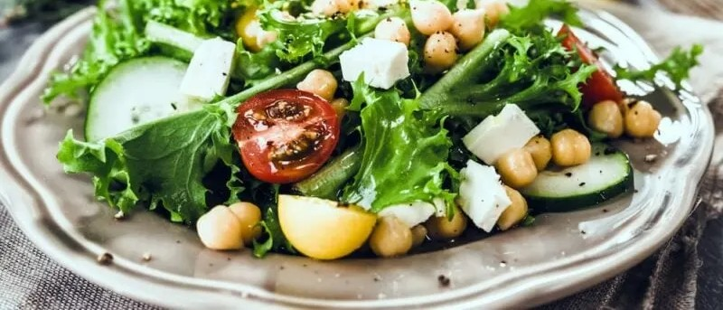
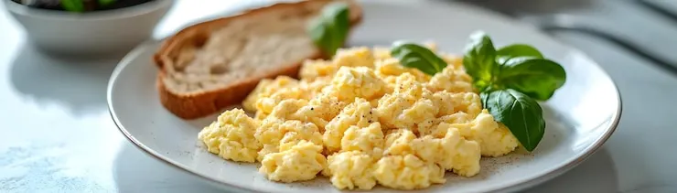

Pasta con manteca y queso

Pasos
- Hervir la pasta en agua con sal.
- Colar cuando esté al dente.
- Agregar manteca y mezclar.
- Servir con queso rallado.
Sándwich tostado

Pasos
- Colocar jamón y queso entre dos panes.
- Llevar a la tostadora o sartén.
- Cocinar hasta que el pan esté dorado.
- Servir caliente.
Ensalada rápida

Pasos
- Cortar lechuga y tomate.
- Agregar sal y aceite.
- Mezclar bien.
- Servir fresca.
Huevo revuelto

Pasos
- Batir los huevos en un bowl.
- Calentar una sartén con un poco de aceite.
- Cocinar los huevos revolviendo.
- Servir caliente.